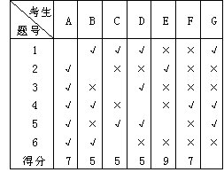
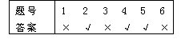
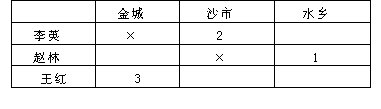
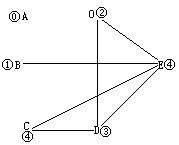
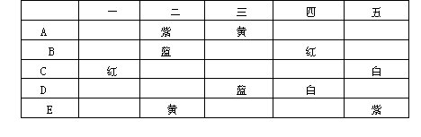
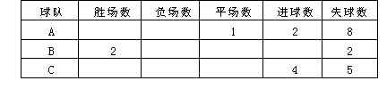
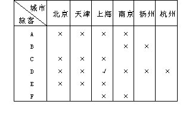
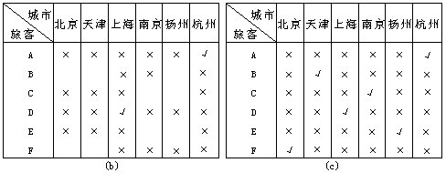
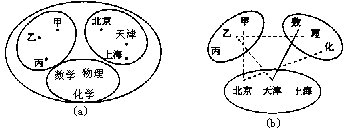
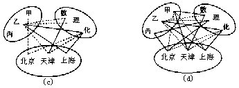

第十一讲 逻辑推理（二）
上一讲我们介绍了有关逻辑推理问题的简单例子，它并没有用到专门的数学原理，而是直接运用正确推理，解决逻辑问题的.这一讲我们将利用图表解决一些较为复杂的逻辑推理问题。
例11 一次数学考试，共六道判断题.考生认为正确的就画“√”，认为错误的就画“×”.记分的方法是：答对一题给2分；不答的给1分；答错的不给分.已知A、B、C、D、E、F、G七人的答案及前六个人的得分记录在表中，请在表中填出G的得分，并简单说明你的思路。
分析 由于E得了9分，说明他只答错了一道题.先假定答错的是第1题，这样就有一个标准答案，并由此可分析其他人的得分.如出现矛盾，再假定E答错的是第2题，…，直到判断出E答错的题号为止.有了正确的答案，就可以写出G的得分。

解：假设E的第1题答错，那么A至少错3道题，一题未答，最多得5分，与A得7分矛盾.所以E第1题答对。
假设E第2题答错，可知A最多得3分，矛盾.所以E第2题答对。
假设E第3题答错，则B最多得3分，矛盾.所以E第3题答对。
假设E第6题答错，则D最多得3分，矛盾.所以E第6题答对。
由于E得9分，因此E只答错一题，因此E第4题答错，于是A的第2、4两题对，3、6两题错.而A得7分，说明A的第5题是对的.由A、E两人的答案，可得一标准答案如下表：

按此标准评分，与题中所给A、B、C、D、E、F得分相符合，所以E的第4题确实答错了.上表的答案是正确的.故可知G得8分。
例12 李英、赵林、王红三人参加全国小学生数学竞赛，他们是来自金城、沙市、水乡的选手，并分别获得一、二、三等奖.现在知道：
①李英不是金城的选手；
②赵林不是沙市的选手；
③金城的选手不是一等奖；
④沙市的选手得二等奖；
⑤赵林不是三等奖。
根据上述情况，王红是__的选手，他得的是__等奖。
解：为了便于分析，我们画表帮助思考.

根据条件①②，在相应的格中打上“×”。
由条件④得出：如果王红是沙市的选手，他得二等奖，那么由条件③可知：金城选手不是一等奖，只能是三等奖.又因为李英不是金城选手，只有赵林得三等奖.这与条件⑤矛盾.所以王红不是沙市选手，沙市选手应该是李英，他得二等奖.这样金城的选手只能是王红，他得三等奖。
例13 李云和他哥哥参加一次集会，同时出席的还有其他两对兄弟.见面后有的人握手问候，没有人和自己的兄弟问候，也没有人和同一个人握两次手.事后李云发现除自己外每个人握手次数互不相同，问李云握了几次手？李云的哥哥握了几次手？
解：设除李云（用0表示）之外的五个人分别是A、B、C、D、E，他们握手的次数分别是0次、1次、2次、3次、4次，那么他们的握手情况可以用右图来表示，其中一条连线表示握过手一次，没有连线即表示没握过手。

从图中很容易看出：李云握手2次。
那么，谁是李云的哥哥呢？因为A是唯一没有和E握过手的人，所以A、E是一对兄弟.D只和A、B没握过手，而A已经是E的兄弟了，所以B、D也是一对兄弟.这样只剩下C是李云的哥哥，他握手的次数也为2次.
例14 红、黄、蓝、白、紫五种颜色的珠子各一颗，分别用纸包着，在桌子上排成一行，有A、B、C、D、E五个人，猜各包珠子的颜色，每人只猜两包。
A猜：第二包是紫的，第三包是黄的；
B猜：第二包是蓝的，第四包是红的；
C猜：第一包是红的，第五包是白的；
D猜：第三包是蓝的，第四包是白的；
E猜：第二包是黄的，第五包是紫的。
猜完后，打开各纸包一看发现每人都只猜对了一包，并且每包只有一人猜对.请你判断他们各猜对了哪一包？
解：我们把题目中的条件列成一个表，就更清楚了。

根据已知条件，每一包都只有一人猜对，而第一包只有C猜，所以C猜对了第一包，是红的；又根据每人只猜对了一种，所以C猜第五包是白的，猜错了；第五包只有C、E两人猜，所以E猜第五包是紫的，猜对了；那么E猜第二包是黄的，猜错了；紫颜色的珠子，只有A、E两人猜，那么A猜第二包是紫的，猜错了；第二包有A、B、E三人猜，其中A、E都猜错了，所以B猜第二包是蓝的，猜对了；那么B猜第四包是红的，猜错了；D猜第三包是蓝的，也猜错了；所以A猜对的是第三包，是黄的；D猜对的是第四包，是白的。
总结以上推理判断，A猜对了第三包是黄的，B猜对了第二包是蓝的，C猜对了第一包是红的，D猜对了第四包是白的，E猜对了第五包是紫的。
注如果题中只给了一个条件：“每人都只猜对了一包”，你能判断他们都猜对了哪包吗？
例15 有A、B、C三个足球队，每两队都比赛一场，比赛结果是：A有一场踢平，共进球2个，失球8个；B两战两胜，共失球2个；C共进球4个，失球5个，请你写出每队比赛的比分。
分析 解决本题首先要明白两点常识：
①一个队踢进一个球，对方就失去一个球，所以三个队的总进球数应等于总失球数；
②两个队踢平，显然该场球的进、失球的总数应相等。
根据已知条件，可以列成表格如下：

解：已知每两个队要赛一场，一共要赛三场球.B是两战两胜，显然一场胜A，另一场胜C；A踢平一场无疑是与C比赛的这场球。
由总进球数等于总失球数，则B队的进球数应为9个。
因为A与C两队进球总数是6个，那么除去A、C对B的那两场球赛中，踢进B队的那2球外，剩下的4个球便是A与C踢平那一场中双方各自踢进对方的进球数的和，因此A与C踢成2比2。
现在从C的进球数分析，由于C进球4个，除去与A两平外，另外进的两个球是对B比赛进的球数；再从C的失球数分析，因为C对A失两球，表中C共失了5个球，因此另外失的3个球就是对B失的球数.所以C对B是2比3。
再因为B进球共9个，除去对C进的3个球，那么对A就进了6个球，A对B没有进球，所以B对A是6比0。
例16 北京至福州列车里坐着6位旅客：A、B、C、D、E、F.分别来自北京、天津、上海、扬州、南京和杭州，已知
①A和北京人是医生；E和天津人是教师；C和上海人是工程师。
②A、B、F和扬州人参过军，而上海人从未参军。
③南京人比A岁数大；杭州人比B岁数大；F最年轻。
④B和北京人一起去扬州；C和南京人一起去广州。
试根据已知条件确定每位旅客的住址和职业。
分析 由于职业可由住址确定，所以只需考虑确定旅客的住址。

解：下面我们利用表格进行推理.表格中记号“√”表示这个人是来自这个城市；记号“×”表示这个人不来自这个城市。
由①可知，A、C、E既不是北京人，也不是天津、上海人；由②可知，A、B、F不是上海人，也不是扬州人.于是得到D是上海人.那么他不是其他城市的人.如图（a）。
由③知，A和F不是南京人，那么A一定是杭州人.而其他旅客都不是杭州人.如下图（b）。
由④可知，B不是北京人，也不是南京人；C不是南京人，那么B是天津人，C是扬州人；故F是北京人，E是南京人.如下图（c）。

综合上述推理，我们得到：
A是医生，来自杭州；B是教师，来自天津；
C是工程师，来自扬州；D是工程师，来自上海；
E是教师，来自南京；F是医生，来自北京。
例17 甲、乙、丙三人分别在北京、天津、上海的中学教数学、物理、化学.已知
①甲不在北京；
②乙不在天津；
③在北京的人不教化学；
④在天津的人教数学；
⑤乙不教物理。
根据以上情况判断，甲、乙、丙三人分别在何处教何课程？
分析 根据已知条件，我们把人、地区、科目这三类分别用点表示在三个集合内.规定：两者之间有关系用实线连接，没有关系用虚线连接.这样把问题转化为用图进行推理（如图（a））.据此，下面的结果是显然的：①如果某一点用虚线连接某一个集合的两个点，则这点与这一集合内的第三个点应连实线；②如果在以不同集合内的点为顶点的三角形中两条边是实线，则第三条边也应该是实线.这样，上述三角形中若一条边为虚线，另一条边为实线，则第三条边一定为虚线.这两条结论是解题的依据.解题的关键是找到三个以实线为边的三角形。

解：根据题意，甲与北京、乙与天津、乙与物理、北京与化学之间连虚线；天津与数学之间连实线（如上图（b））.这样，根据上面的结论，乙与数学应连虚线，乙与化学应连实线。
从而天津与化学连虚线，上海与化学连实线，乙与上海连实线（如下页图（c）），即乙在上海教化学.由图（c）进一步可以看出，甲与上海应连虚线，甲与天津连实线.因而甲与数学连实线（如下页图（d））.由此得出：甲在天津教数学，而余下就是丙在北京教物理.
